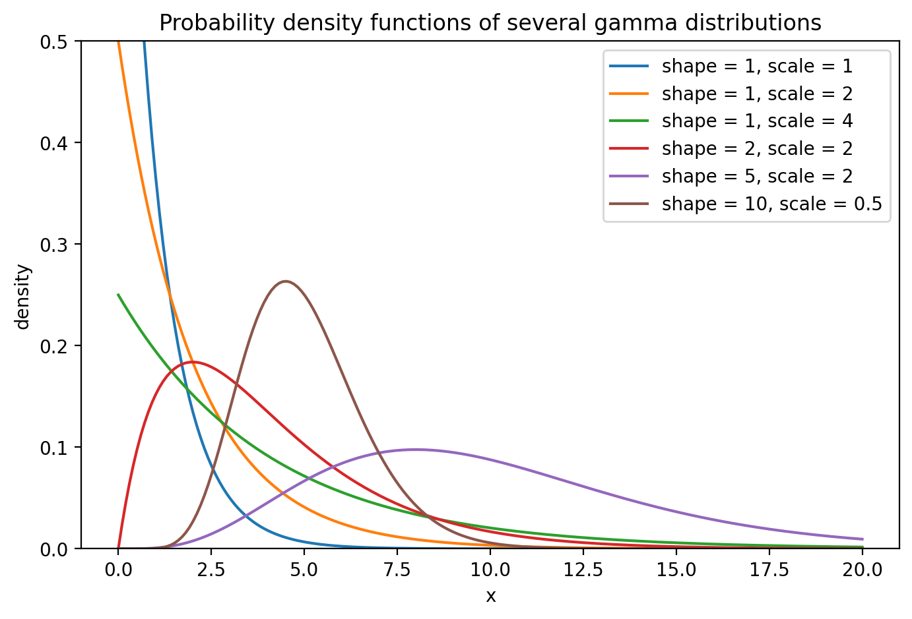
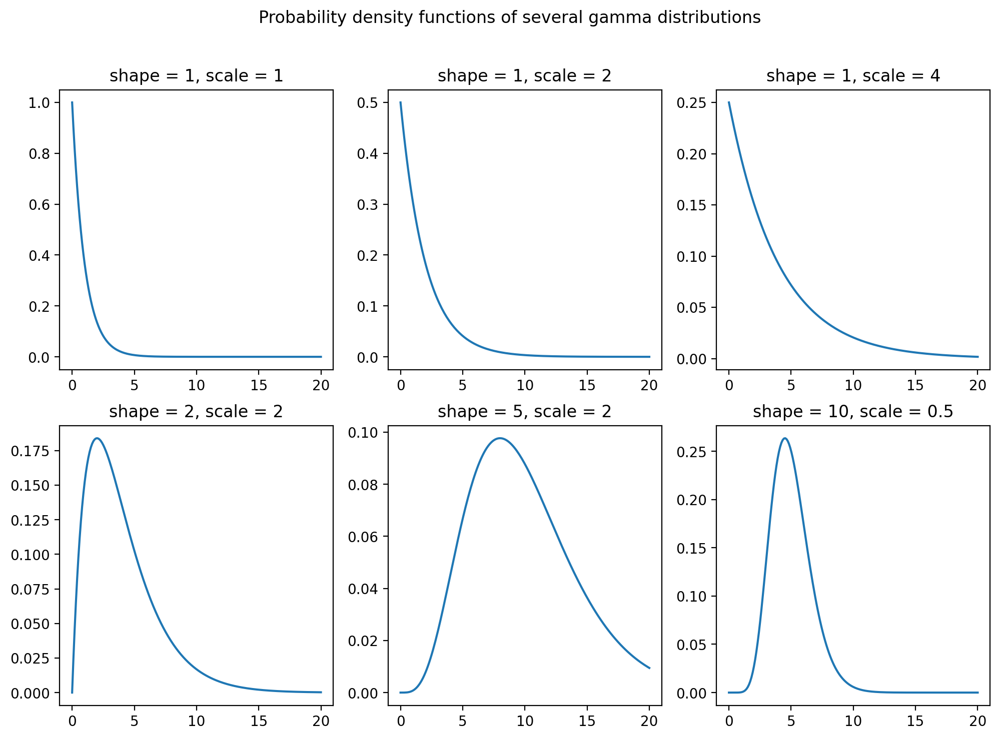
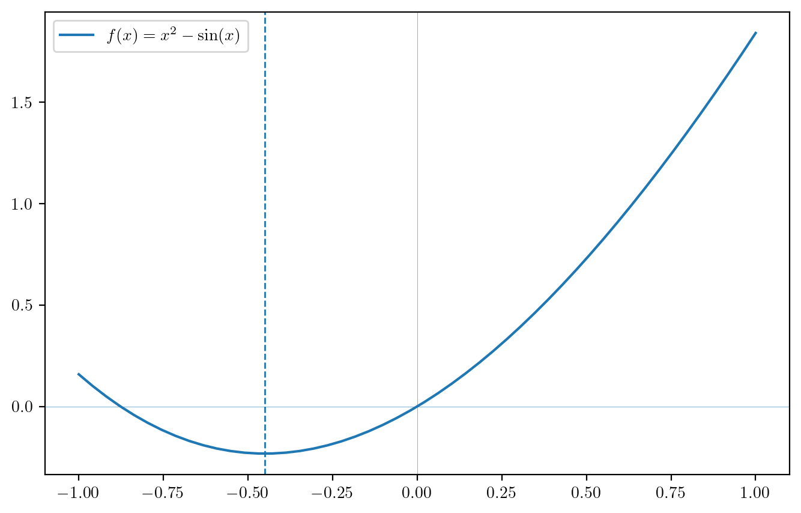
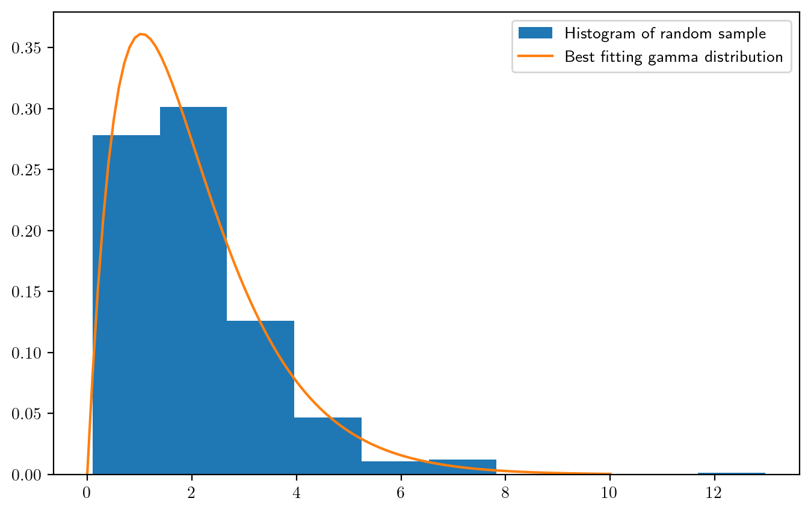
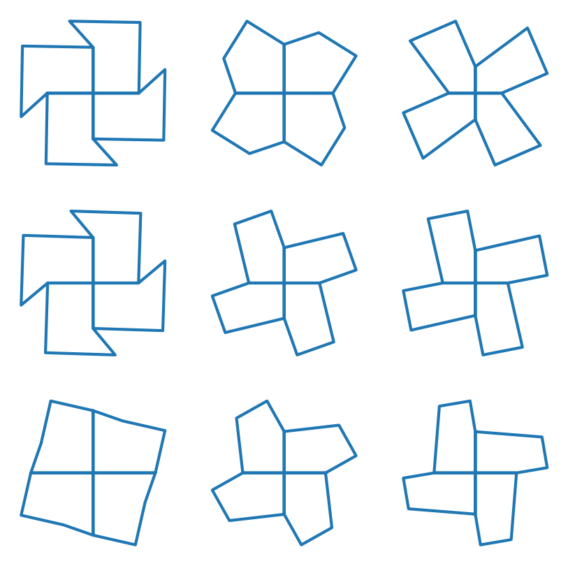

import numpy as np
import matplotlib.pyplot as pltFor and while loops
For loops
The logic of loops in Python is just the same as it was in R. We need a list of index values, and then we give a set of commands to execute as our index proceeds through the list of index values:
x = ["this", 1, "that", True]
for index in x:
print(index)this
1
that
TrueOften our index is a list of numbers, which we can make with the range function.
for i in range(6):
print(i**2)0
1
4
9
16
25Here is something really cool: We can use a loop to create list!
dates = [s + " 1st" for s in ['Jan','Feb','Mar','Apr','May','Jun','Jul','Aug','Sep','Oct','Nov','Dec']]
dates['Jan 1st',
'Feb 1st',
'Mar 1st',
'Apr 1st',
'May 1st',
'Jun 1st',
'Jul 1st',
'Aug 1st',
'Sep 1st',
'Oct 1st',
'Nov 1st',
'Dec 1st']Here we make a list of powers of 2.
[2**a for a in range(0,10,2)][1, 4, 16, 64, 256]Here is another example of creating a list using a loop. Here we use the ord() function, which provides a number corresponding to a character string’s Unicode name together with the chr() function, which prints the character corresponding to this number. We can make a list containing all the lower case letters like this:
letters = [chr(i) for i in range(ord('a'),ord('z')+1)]
letters['a',
'b',
'c',
'd',
'e',
'f',
'g',
'h',
'i',
'j',
'k',
'l',
'm',
'n',
'o',
'p',
'q',
'r',
's',
't',
'u',
'v',
'w',
'x',
'y',
'z']In R we typically instruct our index to begin at 1, but in Python it is more natural to make it begin at 0 because if we want to access the first entry in a list or in a NumPy array, we do so using the index 0.
Let’s write a loop to take the product of all the numbers in a NumPy array.
x = np.random.random(5)
val = 1
for i in range(x.size):
val *= x[i] # short way of writing val = val * x[i]
print(val)0.00524124087316185In Python we can use the syntax x += y as a shorthand for x = x + y, and the same works for any of the aritmetic operators +, -, *, and /. This kind of shorthand notation is recognized in C, but not in R.
Just like in the definition of functions, if we want a for loop to execute multiple commands, we do not need to put them in curly braces; we just indent all the commands.
Compute the sample variance
Below we define a function which computes the sample variance \[ S_n^2 = \frac{1}{n-1}\sum_{i=1}^n(X_i - \bar X_n)^2 \] of a NumPy array containing the values \(X_1,\dots,X_n\):
def svar(x):
n = x.size
m1 = 0
m2 = 0
for i in range(n):
m1 += x[i]
m2 += x[i]**2
v = (m2 - m1**2/n)/(n - 1)
return(v)
x = np.random.normal(loc = 0, scale = 1,size=100)
svar(x)np.float64(0.8728870478330215)Add several lines to a plot
The code below makes a plot of several gamma distribution pdfs. To evaluate the gamma pdf, we need to import the SciPy package: scipy.org.
import scipy.stats as stats
a = [1,1,1,2,5,10] # shape parameter values
b = [1,2,4,2,2,1/2] # scale parameter values
x = np.linspace(0,20,200)
fig, ax = plt.subplots(figsize = (8,5))
ax.set(ylim=(0,1/2))
for i in range(len(a)): # loop through the several parameter value combinations
fx = stats.gamma.pdf(x,a[i],scale=b[i]) # need a shape and a scale parameter
lab = "shape = " + str(a[i]) + ", scale = " + str(b[i])
ax.plot(x,fx,label=lab)
ax.set_title("Probability density functions of several gamma distributions")
ax.set_xlabel("x")
ax.set_ylabel("density")
ax.legend()
Make a grid of plots
Suppose we wanted to plot all the same gamma pdfs, but not on the same set of axes. We can set up a figure with a grid of subplots, setting the number of rows and columns. Then the sets of axes can be accessed by indexing within square brackets. Check out the code below:
fig, axs = plt.subplots(2,3,figsize=(12,8))
k = 0
for i in range(0,2):
for j in range(0,3):
fx = stats.gamma.pdf(x,a[k],scale=b[k]) # need a shape and a scale parameter
axs[i,j].plot(x,fx)
axs[i,j].set_title("shape = " + str(a[k]) + ", scale = " + str(b[k]))
k += 1
fig.suptitle('Probability density functions of several gamma distributions')
plt.show()
Compute Wilcoxon rank sum statistic
If we observe a “control” sample \(X_1,\dots,X_n\) and a “treatment” sample \(Y_1,\dots,Y_m\), the Wilcoxon Rank Sum test concludes a positive treatment effect (\(Y\)’s tend to be greater than \(X\)’s) if the statistic \[ W_{XY} = \sum_{i=1}^n\sum_{j=1}^m\mathbb{I}(X_i \leq Y_j) \] exceeds a high enough threshold, where \(\mathbb{I}(A)\) is equal to \(1\) if \(A\) is true and \(0\) if \(A\) is false. Let’s write a double for loop to compute the value of \(W_{XY}\):
def wilcx(X,Y):
n = X.size
m = Y.size
val = 0
for i in range(n):
for j in range(m):
val += X[i] <= Y[j]
return(val)
n = 30
m = 25
X = np.random.normal(0,1,n)
Y = np.random.normal(0,1,m)
wilcx(X,Y)np.int64(417)While loops
The logic of while loops in Python is just the same as it was in R.
Approximating the natural logarithm
As a first example, let’s write a function which returns an approximation to \(\log(z)\) for any \(z > 0\) given by a partial sum of the infinite series representation \[ \log(z) = 2 \sum_{k=0}^\infty \frac{1}{2k+1}\Big(\frac{z-1}{z+1}\Big)^{2k+1}, \] where \(\log(\cdot)\) denotes the natural logarithm. Let’s set up the function so that it stops adding terms when the contribution of a new term is less than some tolerance level, and such that the function returns the number of terms added.
def lnapp(z,tol=1e-8):
k = 0
ln = 0
conv = False
while(not conv): # in Python we cannot negate a boolean with '!' as we can in R! We need to use 'not'
trm = ((z-1)/(z+1))**(2*k+1) / (2*k+1)
ln += trm
k += 1
conv = abs(trm) < tol
ln = 2*ln
return([ln,k])
z = 100
print(lnapp(z))
print(np.log(z))[4.605169750339702, 302]
4.605170185988092The function returns both the approximation to \(\log(z)\) and the number of iterations required to to meet the convergence criterion.
Newton’s method to find a reciprocal
Let’s do a another example of Newton’s method:
We can find the reciprocal \(1/a\) of a positive real number \(a\) by finding the root of the equation \[ f(x) = a - 1/x. \] Newton’s method prescribes choosing an initial guess \(x_0\) for the reciprocal of \(a\) and then making the updates \[ x_{n+1} = x_n - \frac{f(x_n)}{f'(x_n)} = 2x_n - a x_n^2 \] until convergence. Let’s write a function for finding the reciprocal of a number in this way (it turns out you have to choose an initial value satisfying \(0 < x_0 < 2/a\) in order for the algorithm to converge. We will just choose the inital value to be close to zero, knowing that if \(a\) is large, we may need to choose a smaller initial value). This example can be found on page 352 of the Calculus book. Let’s make the function so that it can find the reciprocal of a negative value.
def recip(a,tol = 1e-9):
if(a < 0):
sgn = -1
a = -a
else: sgn = 1
x = 0.01
conv = False
while(not conv):
x0 = x
x = 2*x - a * x**2
conv = abs(x - x0) < tol
x = sgn * x
return(x)print(recip(-6))
print(recip(0.1))
print(recip(14.5))-0.16666666666666669
9.999999999999998
0.06896551724137931Newton’s method for minimizing a function
If a function is convex, we can find where it is minimized by taking its first derivative and setting this equal to zero. If we cannot find a closed-form expression for the root of the derivative, we can use Newton’s method. If the function is \(f\) and its first and second derivatives are denoted \(f'\) and \(f''\), then we can, using Newton’s method, find the minimizer of \(f\) with the updates \[ x_{n+1} = x_n - \frac{f'(x_n)}{f''(x_n)}, \] starting from an initial guess \(x_0\), as this algorithm will lead to the value of \(x\) such that \(f'(x) = 0\). Note that the same algorithm can be used to maximize a concave function.
As an example, the code below finds the minimizer of the function \(f(x) = x^2 + \sin(x)\), using \(f'(x) = 2x + \cos(x)\) and \(f''(x) = x - \sin(x)\).
x = 0 # initial guess
tol = 1e-6 # convergence tolerance
conv = False
while(not conv):
x0 = x
x = x - (2*x + np.cos(x))/(2 - np.sin(x))
conv = abs(x - x0) < tol
plt.rcParams['text.usetex'] = True # ask to use LaTex in plot labels
t = np.linspace(-1,1,50)
ft = t**2 + np.sin(t)
fig, ax = plt.subplots(figsize=(8,5))
ax.plot(t,ft,label="$f(x) = x^2 - \\sin(x)$")
ax.axvline(x,linestyle="--",linewidth = 1)
ax.axvline(0,linewidth = .2)
ax.axhline(0,linewidth = .2)
ax.legend()
Computing a maximum likelihood estimator
If we observe a random sample \(X_1,\dots,X_n\) from a probability distribution with pmf or pdf \(f(\cdot,\theta)\) which depends on a parameter \(\theta \in \Theta \subset \mathbb{R}^p\), the maximum likelihood estimator of \(\theta\) is defined as the maximizer over \(\Theta\) of the likelihood function, which is given by \[ \mathcal{L}(\theta,X_1,\dots,X_n) = \prod_{i=1}^nf(X_i,\theta). \] The maximum likelihood estimator can be thought of as the value of the parameter which gives the greatest probability to the data observed.
We can often use calculus methods to find the maximizer of the likelihood function; first, though, we usually transform the likelihood function into what we call the log-likelihood function by taking the natural log. This operation converts the product into a sum, on which it is easier to take derivatives. So, we define the log-likelihood as
\[
\ell(\theta,X_1,\dots,X_n) = \log \mathcal{L}(\theta,X_1,\dots,X_n) = \sum_{i=1}^n \log f(X_i,\theta),
\] Recall from your calculus classes that the minimizer of a function (in particular a convex function) can be found by setting the first derivative of the function equal to zero. Define \[
S(\theta,X_1,\dots,X_n) = \frac{\partial}{\partial \theta} \ell(\theta,X_1,\dots,X_n)
\] as the vector of first-order derivatives of the log-likelihood function with respect to the entries in \(\theta\). This is often called the score function. Then we can obtain an expression for the maximum likelihood estimator by solving the equation \[
S(\theta,X_1,\dots,X_n) = 0.
\] where this is a system of equations when \(p > 1\), that is when \(\theta\) denotes a vector of unknown parameter values.
It is often the case that the solution to the previous equation or system of equation does not admit a closed-form expression; that is, rather than computing it with a formula, one must seek it with an algorithm. Newton’s algorithm again shines: Let \[ \mathcal{H}(\theta,X_1,\dots,X_n) = \frac{\partial^2}{\partial \theta \partial \theta^T}\ell(\theta,X_1,\dots,X_n) \] denote the Hessian, or the matrix of second-order partial derivatives of the log-likelihood function with respect to the entries of \(\theta\). Then Newton’s method prescribes the updates \[ \theta_{n+1} = \theta_n - \mathcal{H}^{-1}(\theta_n,X_1,\dots,X_n)S(\theta_n,X_1,\dots,X_n) \] after initialization of \(\theta_0\) at some arbitary starting point.
Gamma shape parameter
Suppose \(X_1,\dots,X_n\) are a random sample from the \(\text{Gamma}(\alpha,1)\) distribution, which has pdf given by \[ f(x,\alpha) = \frac{1}{\Gamma(\alpha)}x^{\alpha - 1}e^{-x}, \quad x > 0, \] where \(\Gamma(t) = \int_0^\infty x^{t - 1}e^{-x}\) is the gamma function. The parameter \(\alpha\) is called the shape parameter; usually the gamma distribution also has a scale parameter \(\beta\), but this gamma distribution has the scale parameter set equal to \(1\), so we will not have to estimate it. The likelihood function is given by \[ \mathcal{L}(\alpha,X_1,\dots,X_n) = \prod_{i=1}^n\frac{1}{\Gamma(\alpha)}X_i^{\alpha - 1}e^{-X_i} = \Gamma(\alpha)^{-n}\prod_{i=1}^n X_i^{\alpha - 1} \exp(-\sum_{i=1}^n X_i), \] and the log-likelihood is given by \[ \ell(\alpha,X_1,\dots,X_n) = -n \log \Gamma(\alpha) + (\alpha - 1)\sum_{i=1}^n \log X_i + \sum_{i=1}^n X_i. \] The score function is the first derivative of the log-likelihood with respect to \(\alpha\), which is given by \[ S(\alpha,X_1,\dots,X_n) = -n \frac{\Gamma'(\alpha)}{\Gamma(\alpha)} + \sum_{i=1}^n \log X_i = - n \psi(\alpha) + \sum_{i=1}^n \log X_i, \] where \(\Gamma'(\cdot)\) is the first derivative of the gamma function and \(\psi(\cdot) = \Gamma'(\cdot) / \Gamma(\cdot)\) is called the digamma function. The Hessian is given by \[ H(\alpha,X_1,\dots,X_n) = -n \psi'(\alpha), \] where \(\psi'(\cdot)\) is the derivative of \(\psi(\cdot)\) and is called the trigamma function. The Newton’s method update for seeking the maximum likelihood estimator for \(\alpha\) can thus be written \[ \alpha_{n+1} = \alpha_n - \Big[\psi(\alpha_n) - n^{-1}\sum_{i=1}^n \log X_i \Big]/ \psi'(\alpha_n), \] after initializing \(\alpha_0\) at some starting value.
The code below defines a function for seeking the maximum likelihood estimator with Newton’s algorithm. In order to evaluate the digamma and trigamma functions, we import a function called polygamma from a library called scipy.special. Rather than importing that entire library, we import only the needed function:
from scipy.special import polygamma # to compute the digamma and trigamma functions!
def gamshape(X,tol=1e-6): # function to compute the maximum likelihood estimator of alpha
a = 1
conv = False
while(not conv):
a0 = a
a = a - (polygamma(0,a) - np.mean(np.log(X))) / polygamma(1,a)
conv = abs(a - a0) < tol
return(a)
# demonstrate by generating a random sample from the Gamma(a,1) distribution and then estimating the shape parameter
n = 500
a_true = 2
X = np.random.gamma(shape = a_true,scale = 1, size=n)
ahat = gamshape(X)
x = np.linspace(0,10,100)
fxhat = stats.gamma.pdf(x,a=ahat,scale = 1) # best-fitting gamma distribution
fig, ax = plt.subplots(figsize=(8,5))
ax.hist(X,density = True,label = "Histogram of random sample")
ax.plot(x,fxhat,label="Best fitting gamma distribution")
ax.legend()
Practice
Practice writing code and reading code with the following exercises.
Write code
- The code below computes the vertices of four tiles in a 4-tile unit of a pentagonal tiling, centering this at the origin. Make a figure like the one below in which 9 different selections of the input parameters are showcased. The command
ax.set_aspect('equal')matches the scales of the horizontal and vertical axes, which makes each plot a square (guarantees that right angles look like right angles). You can useax.axis('off')to remove the box around each plot.
def tess(a,b,th):
th1 = (180-th)/180 * 3.14159
A = np.array([0,0])
B = A + [a,0]
C = B + [np.cos(th1)*b,np.sin(th1)*b]
D = C + [np.cos(th1+3.14159/2)*b,np.sin(th1+3.14159/2)*b]
E = A + [0,a]
P1 = np.vstack((A,B,C,D,E,A))
P2 = np.vstack((P1[:,1],-P1[:,0])).T
P3 = np.vstack((P2[:,1],-P2[:,0])).T
P4 = np.vstack((P3[:,1],-P3[:,0])).T
P = np.vstack((P1,P2,P3,P4))
x = P[:,0]
y = P[:,1]
return x, y
Read code
Anticipate the output of the following code chunks: